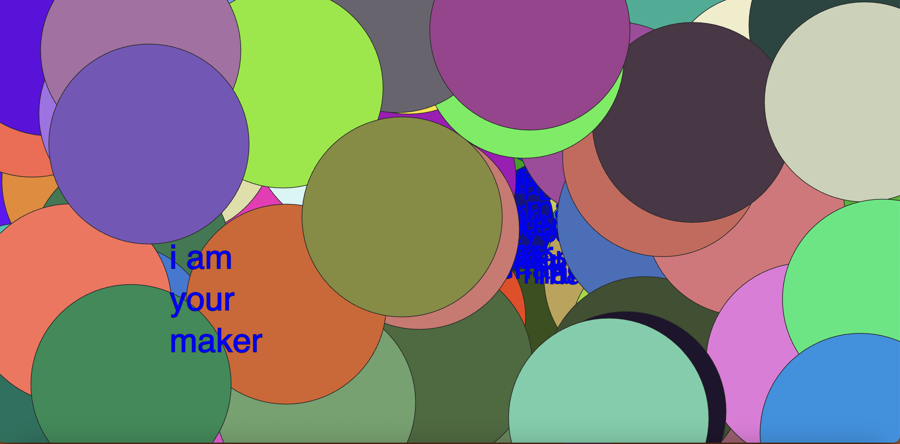
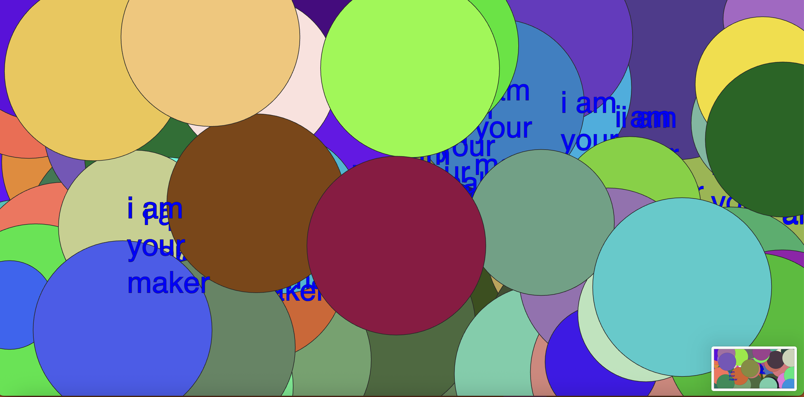
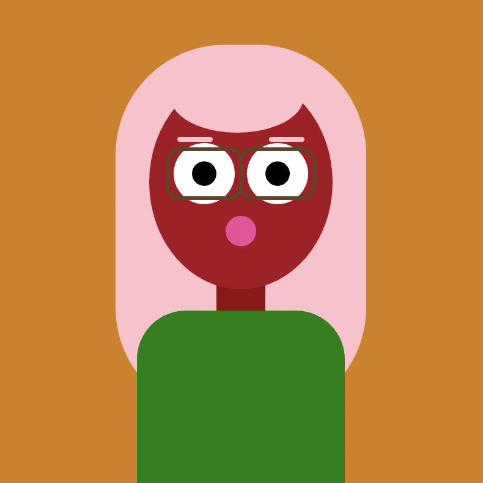

Week 1 at the Telstra Creator Space. Lauren and I worked together to see if we could identify any parts found in the kit. We couldn't.

In the first experiment, we had fun plugging the wires and LEDs into the breadboard. Using rudimentary physics to aid our understanding of voltage and resistors.

Week 2 at the Telstra Creator Space where we started playing with motion sensors which were connected to tiny speakers. The sound was horrendous but the task was really fun.